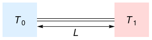
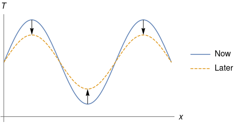
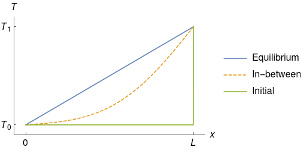
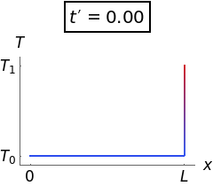

Your work doesn't need to be as detailed as this.
Source code for the images: code.wl
Return to the home page.
Consider a uniform rod of length L and thermal diffusivity \kappa.
Suppose the rod is initially at temperature T_0 throughout. At time t = 0:
What happens?

| Independent variables | |
|---|---|
| x | position (0 \le x \le L) |
| t | time (t \ge 0) |
| Dependent variable | |
| T | temperature |
| Constants | |
| L | length |
| \kappa | thermal diffusivity |
| T_0 | lower temperature |
| T_1 | higher temperature |
Heat equation in T = T (x, t), throughout the rod, for all time:
Before we do anything, we should understand what this means:
Basically, the heat equation says that as time passes, bumps in the temperature profile are levelled out.

Fixed temperature at the two ends, for all time:
Temperature is T_0 throughout the rod, initially:
Units like metres and feet or Celsius and Fahrenheit are arbitrary, and it is better to work in the natural units which arise from the physical constants provided in the problem.
We move from dimensional (unscaled) variables to dimensionless (scaled) variables (marked with a prime):
The natural temperature scale in the problem is T_1 - T_0, the difference between the two prescribed temperatures. Define scaled temperature \scaled{T} by
so that in scaled terms, the lower temperature is \scaled{T} = 0 and the higher temperature is \scaled{T} = 1.
The natural length scale in the problem is L, the length of the rod. Define scaled position \scaled{x} by
so that in scaled terms, the left end of the rod is \scaled{x} = 0 and the right end of the rod is \scaled{x} = 1.
The time scale isn't immediately obvious, so define scaled time \scaled{t} by
with the time scale \tau yet to be determined, i.e. free.
We take the heat equation
and move from unscaled to scaled variables (use the chain rule):
Rearrange:
All of the scaled variables are dimensionless, therefore the bracketed term is a dimensionsless group, i.e. just a number.
Currently the time scale \tau is free; it is not prescribed in the problem and we haven't defined it yet. Because we have one free scale \tau and one dimensionless group, we can eliminate the dimensionless group* by setting it equal to one and solving for \tau:
(*NOTE: if a problem has fewer free scales than dimensionless groups, you won't be able to eliminate all of the dimensionless groups.)
At this point we pause to check: does the time scale we have found make sense?
Yes this makes sense.
Having eliminated the dimensionless group, our heat equation is now
We should also scale the boundary conditions and initial condition:
Writing primes everywhere is annoying, so from here onward we drop the primes. Altogether:
After a long time, the heat going in at the right end x = 1 will be in balance with the heat lost at the left end x = 0. The temperature profile T will reach an equilibium profile \Teq, which may depend on the position x but not on the time t. In symbols,
Thus the PDE and boundary conditions simplify to
(The initial condition (t = 0) is irrelevant at equilibrium.)
The three equations above say that \Teq (x) is a straight line function of x passing throught (x, \Teq) = (0, 0) and (x, \Teq) = (1, 1), so by inspection the equilibrium temperature profile is
Since the equilibrium solution isn't zero, this means that the PDE and boundary conditions aren't all homogeneous (in our case the boundary condition at x = 1 isn't homogeneous). Before doing separation of variables, make sure to subtract out the equilibrium solution so that the boundary conditions become homogeneous. To do this, write the solution as a sum of equilibrium and transient parts,
or
Substituting these into the scaled equations, we get
Since \eval{\Teq}_{t = 0} = \eval{x}_{t = 0} = x, these become
Suppose that the transient solution is the product of a function of position only and a function of time only,
(This may seem restrictive, but since the heat equation is linear we can take linear combinations afterwards.) Substituting this into the PDE for \Ttr, we get
Dividing through by \pos{X} \time{Y}:
This says that a function of t only is equal to a function of x only, and this is supposed to be true for all \time{t} and all \pos{x}.
Thus we have separated the PDE into two ODEs:
(Here the constant C has been absorbed into A and B.)
We then apply the boundary conditions at the two ends of the rod:
We have
which implies A = 0. Therefore
We have
and since we don't want B = 0 (which is boring), we must have
To recap, our transient solution is the product of an exponential decay in time and a sinusoid in position, linked through the constant \con{\lambda} = \con{n} \pi:
What does this mean physically?
So far our transient solution \Ttr satisfies the PDE and boundary conditions. But what about the initial condition,
Clearly the single product \Ttr (x, t) = B \ee ^ {\con{-n^2} \pi^2 t} \sin (\con{n} \pi x) isn't going to work. We need something a bit more general:
Recall that:
Therefore, linear combinations of the product \Ttr (x, t) = B \ee ^ {\con{-n^2} \pi^2 t} \sine{n} will also satisfy the heat equation and the boundary conditions. Writing \B{n} instead of B, a more general form for \Ttr is
The initial condition becomes
and we need to find a Fourier series for the function -x, i.e. determine the coefficients \B{1}, \B{2}, \dots.
It turns out that finding a Fourier series is very similar to the problem of writing a vector \vec{v} in terms of the orthogonal basis \curlybr{\vece{1}, \vece{2}, \dots}:
In the case of the Fourier series, the "vector space" is called an inner product space, the "vector" is the function -x, and the "orthogonal basis" is the sequence of functions \curlybr{\sine{1}, \sine{2}, \dots}. In both cases we want to determine the coefficients \B{1}, \B{2}, \dots.
In the familiar vector space, the dot product of two vectors f and g is given by
In an inner product space, the analogue to the dot product is the inner product. In the current problem*, the inner product of two functions f (x) and g (x) is given by
(*NOTE: More generally you need to include a weighting function inside the integral; only here the weighting function happens to be 1. The endpoints of the integral come from the endpoints of the two boundary conditions.)
The dot/inner product is useful because of the orthogonality property; the dot/inner product between two basis vectors is non-zero if and only if they are the same basis vector:
To find the coefficient for a particular basis vector, simply take the dot/inner product of the series with that vector to kill off all the other components. For example, to find \B{2}, take the dot product with \vece{2}:
Translating this to the context of Fourier series:
In general, the \con{n}th coefficient is given by
We're not in first year anymore, so get Mathematica to do this for us:
FullSimplify[
Divide[
Integrate[-x Sin[n Pi x], {x, 0, 1}],
Integrate[Sin[n Pi x] ^ 2, {x, 0, 1}]
]
, Element[n, Integers]
]
Thus
Putting everything together, the solution is
While "infinity" is technically correct, it isn't a useful answer. For example, infinity is technically the time it takes for nuclear radiation to clear out at Maralinga, but a much more practical measure is the half-life of 24100 years for plutonium-239.
If you should learn anything from this page, it's that you should never answer "how long till equilibrium" with "infinity". Don't do it. (Also don't bother including a smart remark like "technically the answer is infinity"; we know already.)
The rule of thumb we use in applied maths is that we're practically at equilibrium when the exponent reaches 4 (or 5, depending on who you ask), \ee ^ {-4} being just under 2\%. Now, when t > 0, our series is dominated by the first term n = 1 (the terms with higher n are much much smaller). Therefore, a practical measure of equilibrium time is obtained by setting the exponent to 4 for n = 1:
Finally, don't forget that we are still working in scaled (dimensionless) variables; the t above is what we once called \scaled{t}, equal to \unscaled{t} / \tau. The unscaled (dimensional) equilibrium time is therefore
In summary, the rod is initially at temperature T_0 throughout, but has its right end raised to and held at a higher temperature T_1. The left end is held at the original temperature T_0. As time passes, the temperature profile rises towards a straight-line profile at equilibrium.

In animated form (deliberately made small to save bandwidth):
